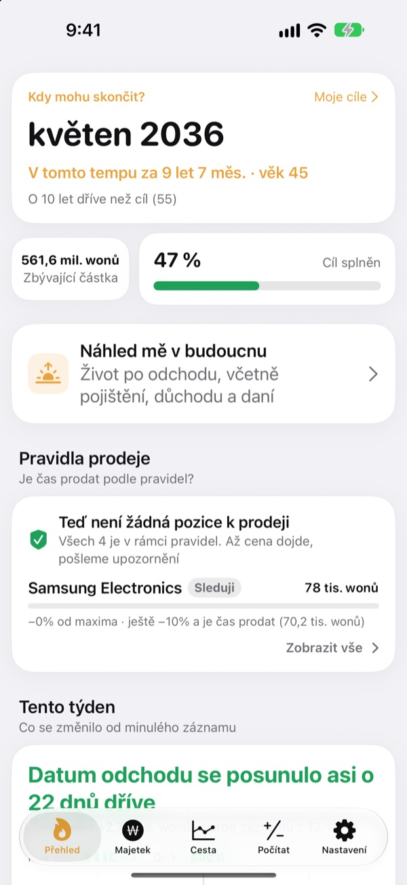
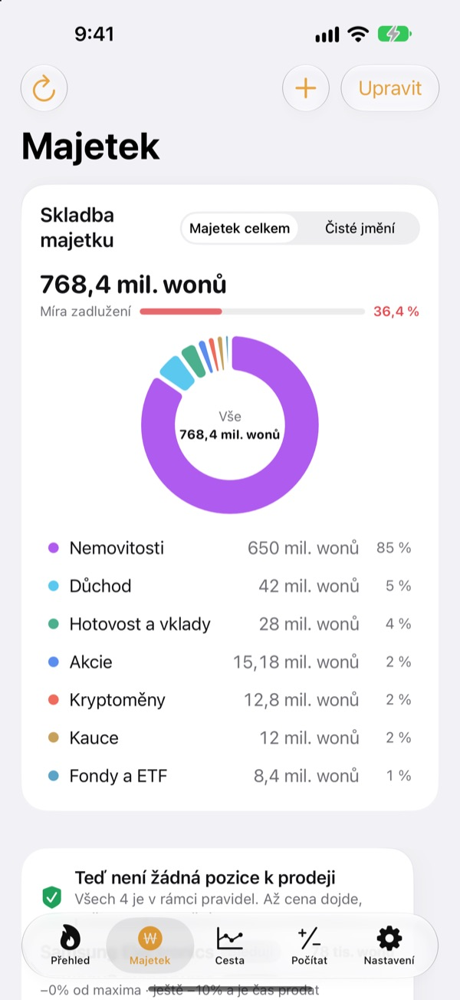
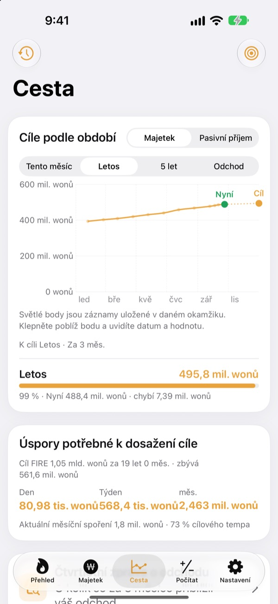
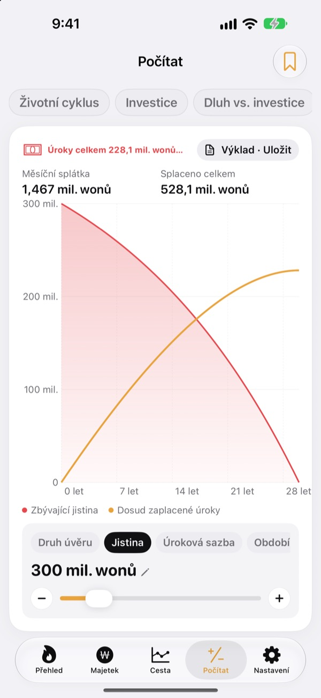

Kdy můžete skončit v práci?
Podle čísel, ne od oka.
Zadejte, kolik utratíte a kolik máte našetřeno, a uvidíte měsíc, kdy můžete odejít. Kdykoli se váš majetek změní, hned víte, jestli se to datum přiblížilo, nebo vzdálilo.
Účet nepotřebujete. Záznamy zůstávají ve vašem zařízení.

Zjistěte své datum odchodu
Posuňte jezdce. Je to stejný výpočet, jaký aplikace dělá na první obrazovce.
Pořád si v hlavě počítáte, jestli už můžete odejít?
Když máte banku, brokera, penzijní spoření a kauci na nájem každé jinde, rozmaže se i celková částka, a datum odchodu tak zůstává odhadem. Toesagak dá všechno na jednu obrazovku a z tohoto součtu průběžně přepočítává měsíc, kdy můžete skončit.
Veškerý majetek na jedné obrazovce
Nemovitosti, akcie, fondy a ETF, důchodové spoření, hotovost a vklady, kauce, kryptoměny i úvěry, seskupené podle druhu, s celkovými aktivy, čistým jměním a mírou zadlužení.
Ceny akcií a kryptoměn se stahují, aby hodnoty byly aktuální, a snímek obrazovky z brokerské aplikace přenese pozice i jejich hodnotu najednou.

Kolik denně k cíli
Cíle na tento měsíc, rok, pět let i do důchodu spolu s dosavadními záznamy na jednom grafu. Aplikace vám také řekne, kolik odkládat denně, týdně nebo měsíčně, abyste zůstali na cestě.
Když se majetek změní, záznam daného týdne se uloží sám, takže historie vzniká bez práce.

Spočítejte si to před velkým rozhodnutím
Kalkulačky vývoje majetku během života, investic, splácení dluhu versus investování, úvěrů, vkladů a spoření, kupní síly mzdy a přepočtu peněz na hodiny. Posuňte hodnotu a graf se překreslí, přičemž předchozí křivka zůstane tečkovaně pro srovnání.
Nastavení, ke kterým se vracíte, si pojmenujte a uložte.

Tři kroky na začátek
- 1
Zadejte výdaje a věk
Stačí přibližná čísla. Datum odchodu uvidíte hned.
- 2
Přidejte majetek
Čím podrobněji ho rozdělíte, tím přesnější datum.
- 3
Občas se podívejte
Týdenní záznamy přibývají samy a aplikace vám může připomenout každého 1. v měsíci.
Jak aplikace počítá
- Cíl
- Roční výdaje po odchodu ÷ bezpečná míra čerpání (při 4 % jde o výdaje na 25 let)
- Datum odchodu
- Měsíc, kdy čisté jmění spolu s tím, co měsíčně odkládáte, zhodnocené očekávaným výnosem, dosáhne cíle
- Celková aktiva
- Všechno, co vlastníte, dohromady
- Čisté jmění
- Celková aktiva minus dluhy, například úvěry
- Plnění
- Čisté jmění ÷ cíl. Sledovat ho jde i podle pasivního příjmu
- Co můžete změnit
- Měsíční výdaje, míru čerpání od 2 do 6 %, očekávaný výnos od 0 do 12 %, věk, ve kterém chcete skončit
Všechny výsledky jsou orientační výpočty podle vašich údajů a nejsou investičním poradenstvím.
Otázky
Kde jsou moje záznamy uložené?
Jen ve vašem zařízení. Žádná registrace, vývojáři se nic neposílá. Zapněte v Nastavení synchronizaci přes iCloud a uvidíte stejné záznamy na iPhonu i iPadu díky vlastnímu účtu iCloud.
Ceny se neaktualizují.
Americké a korejské akcie, kryptoměny a směnné kurzy fungují bez nastavování. Zkontrolujte připojení k internetu a správnost tickeru nebo kódu. Ceny bytů vycházejí z veřejných korejských dat o nemovitostech a vyžadují zadání servisního klíče v Nastavení.
Jaký je rozdíl mezi celkovými aktivy a čistým jměním?
Celková aktiva jsou součet všeho, co vlastníte. Čisté jmění je tato částka po odečtení dluhů, například úvěrů. Datum odchodu se počítá z čistého jmění.
Jak přenesu záznamy do nového zařízení?
V Nastavení použijte Export a vytvořte záložní soubor, uložte ho do Souborů, na iCloud Drive nebo do e-mailu a v novém zařízení ho obnovte. Záložní soubory nikdy neobsahují klíče API. Aplikace navíc sama uchovává v zařízení 20 posledních záloh.
Jak fungují upozornění na prodej?
U každé pozice nastavte, o kolik smí klesnout od vrcholu, nebo cílovou cenu. Když cena tuto hranici překročí, dostanete upozornění. Při růstu aplikace mlčí. Ceny se kontrolují při otevření aplikace a tehdy, když to iOS dovolí na pozadí (obvykle jednou za pár hodin), takže nejde o sledování v reálném čase.
Můžu svá čísla skrýt před ostatními?
Zapněte v Nastavení zámek aplikace a budete ji otevírat pomocí Face ID nebo kódu. Se zapnutým zámkem nezobrazuje čísla ani měsíční připomínka.
Můžu se nejdřív porozhlédnout?
Zapněte v Nastavení ukázková data a projděte všechny obrazovky s majetkem smyšlené osoby. Po vypnutí se vaše záznamy hned vrátí. Při zapnuté synchronizaci přes iCloud nejsou ukázková data k dispozici.
Jak smažu všechna data?
Smazáním aplikace se odstraní všechny záznamy uložené v zařízení. Pokud si chcete nechat kopii, nejdřív v Nastavení exportujte záložní soubor.
Můžu podle těchto čísel investovat?
Výsledky Toesagaku jsou orientační výpočty podle vašich údajů a předpokládaného výnosu. Nejde o investiční poradenství a skutečný výsledek závisí na trhu a vaší situaci.
Chyby, nápady nebo dotazy? Napište na leeo@kakao.com.